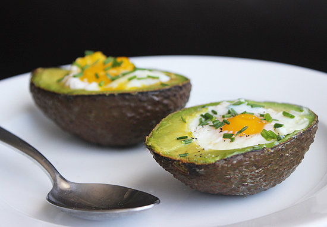
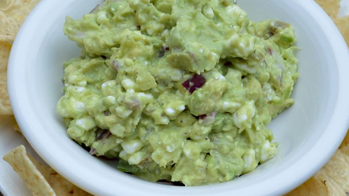

Avocado Toast
Avocado Toast
Thank you for visiting us here at the Avocado League.
We are committed to defending the humble avocado from all those who would oppress it. We believe that avocados are good for you and should be used as often as possible. We research healthy nutritional uses for avocados, lobby government for pro-avocado legislation, support our local growers, endorse festivals, and constantly plot world domination for the good of all avocados.
We could use your help to make avocados great again. Can you contribute $25 to our cause?
Avocado Toast

Baked Egg in an Avocado

Healthy Guacamole